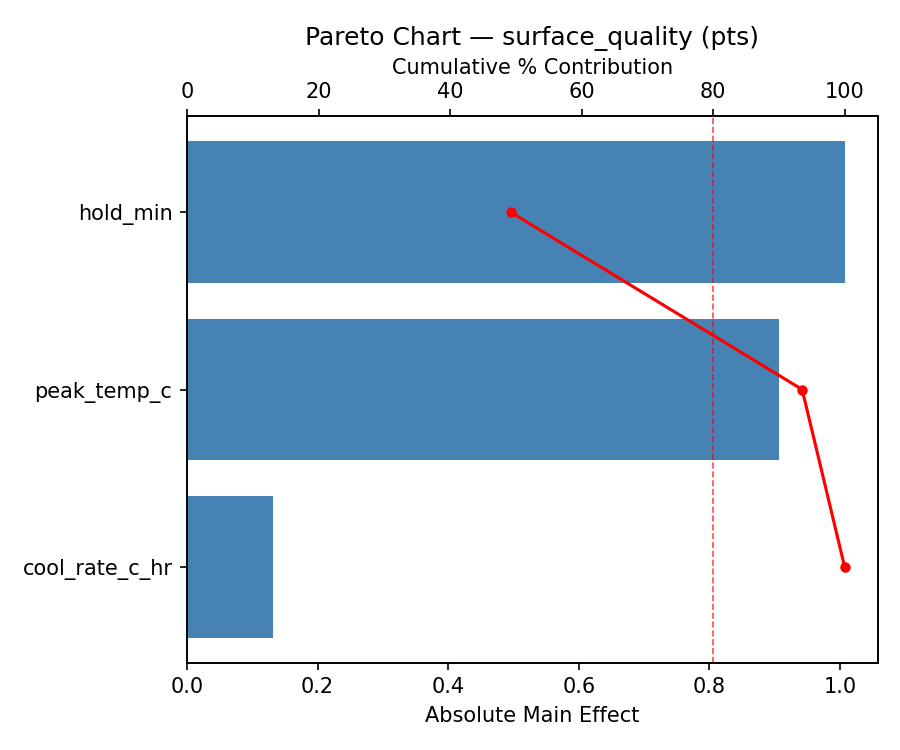
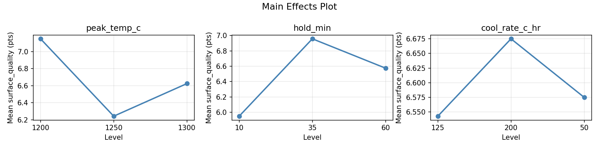
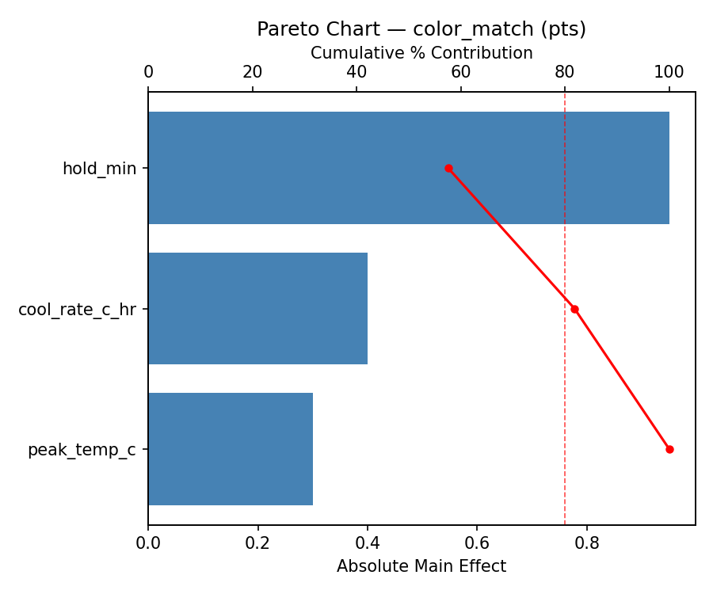
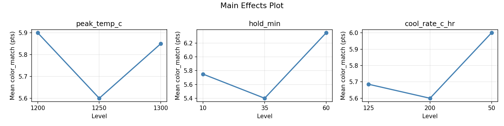
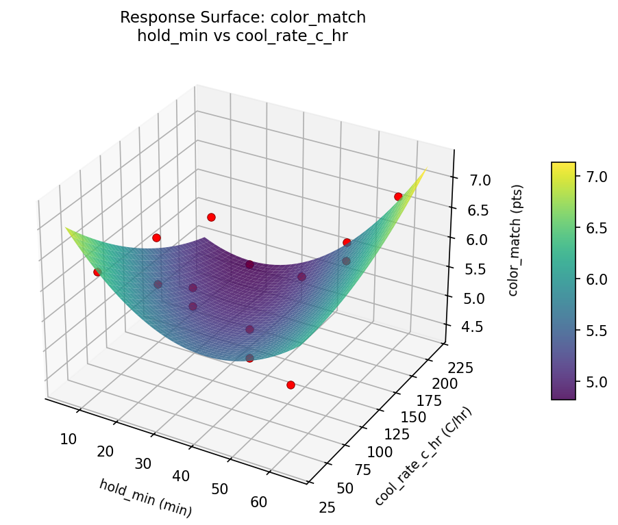
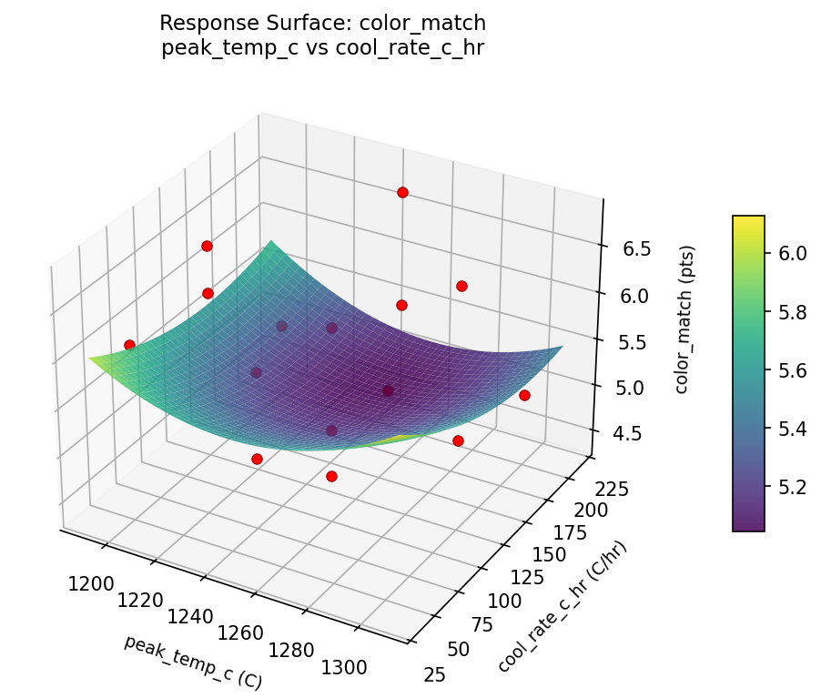
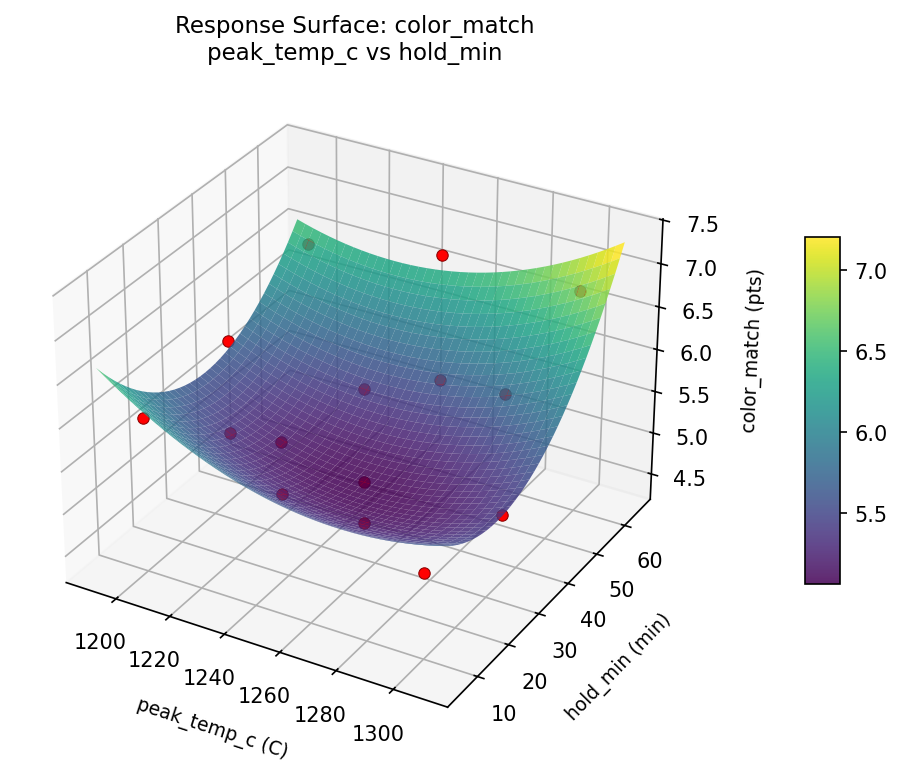
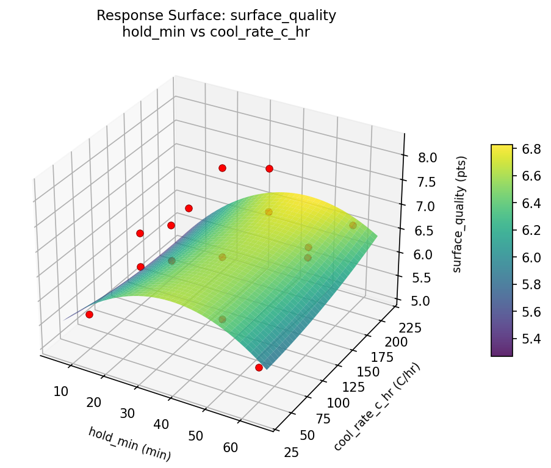
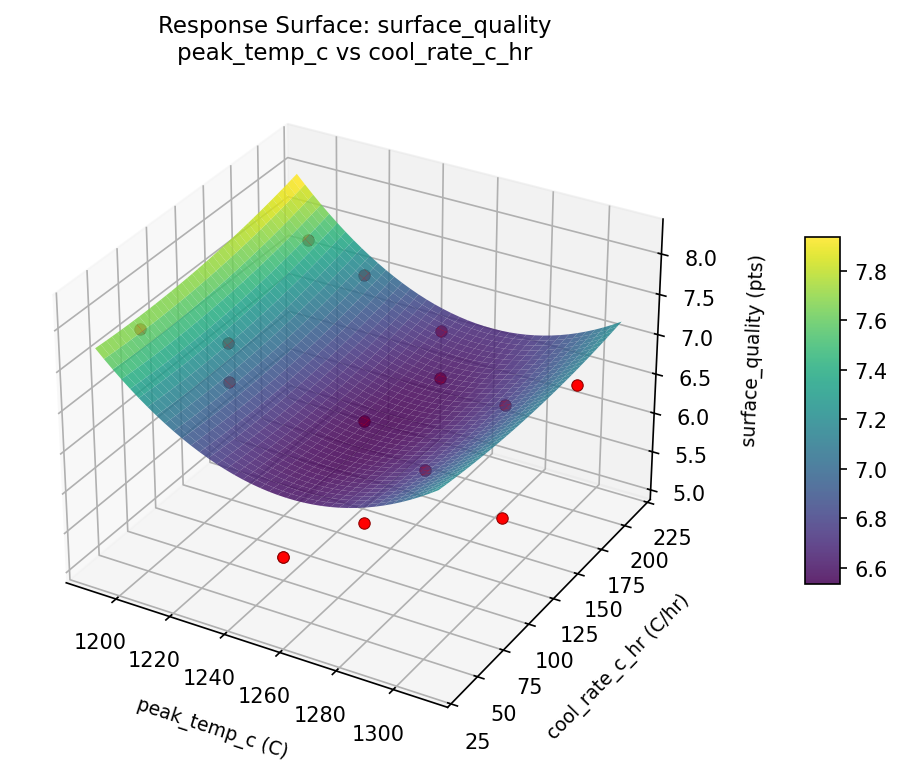
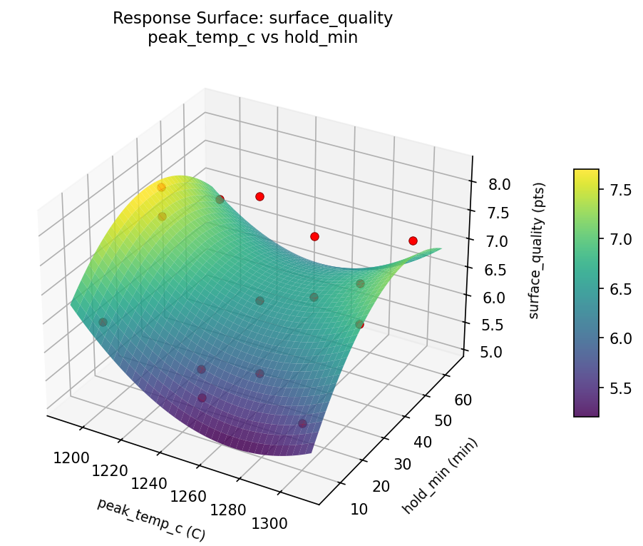

Summary
This experiment investigates ceramic glaze firing. Box-Behnken design to maximize glaze surface quality and color accuracy by tuning peak temperature, hold time, and cooling rate.
The design varies 3 factors: peak temp c (C), ranging from 1200 to 1300, hold min (min), ranging from 10 to 60, and cool rate c hr (C/hr), ranging from 50 to 200. The goal is to optimize 2 responses: surface quality (pts) (maximize) and color match (pts) (maximize). Fixed conditions held constant across all runs include kiln = electric, atmosphere = oxidation.
A Box-Behnken design was chosen because it efficiently fits quadratic models with 3 continuous factors while avoiding extreme corner combinations — requiring only 15 runs instead of the 8 needed for a full factorial at two levels.
Quadratic response surface models were fitted to capture potential curvature and factor interactions. The RSM contour plots below visualize how pairs of factors jointly affect each response.
Key Findings
For surface quality, the most influential factors were cool rate c hr (44.4%), hold min (31.9%), peak temp c (23.7%). The best observed value was 8.2 (at peak temp c = 1300, hold min = 60, cool rate c hr = 125).
For color match, the most influential factors were cool rate c hr (58.2%), peak temp c (28.1%), hold min (13.8%). The best observed value was 6.8 (at peak temp c = 1200, hold min = 60, cool rate c hr = 125).
Recommended Next Steps
- Run confirmation experiments at the predicted optimal settings to validate the model.
- Consider whether any fixed factors should be varied in a future study.
Experimental Setup
Factors
| Factor | Low | High | Unit |
|---|
peak_temp_c | 1200 | 1300 | C |
hold_min | 10 | 60 | min |
cool_rate_c_hr | 50 | 200 | C/hr |
Fixed: kiln = electric, atmosphere = oxidation
Responses
| Response | Direction | Unit |
|---|
surface_quality | ↑ maximize | pts |
color_match | ↑ maximize | pts |
Configuration
{
"metadata": {
"name": "Ceramic Glaze Firing",
"description": "Box-Behnken design to maximize glaze surface quality and color accuracy by tuning peak temperature, hold time, and cooling rate"
},
"factors": [
{
"name": "peak_temp_c",
"levels": [
"1200",
"1300"
],
"type": "continuous",
"unit": "C"
},
{
"name": "hold_min",
"levels": [
"10",
"60"
],
"type": "continuous",
"unit": "min"
},
{
"name": "cool_rate_c_hr",
"levels": [
"50",
"200"
],
"type": "continuous",
"unit": "C/hr"
}
],
"fixed_factors": {
"kiln": "electric",
"atmosphere": "oxidation"
},
"responses": [
{
"name": "surface_quality",
"optimize": "maximize",
"unit": "pts"
},
{
"name": "color_match",
"optimize": "maximize",
"unit": "pts"
}
],
"settings": {
"operation": "box_behnken",
"test_script": "use_cases/287_ceramic_glaze/sim.sh"
}
}
Experimental Matrix
The Box-Behnken Design produces 15 runs. Each row is one experiment with specific factor settings.
| Run | peak_temp_c | hold_min | cool_rate_c_hr |
|---|
| 1 | 1250 | 10 | 50 |
| 2 | 1250 | 35 | 125 |
| 3 | 1300 | 35 | 200 |
| 4 | 1300 | 35 | 50 |
| 5 | 1250 | 35 | 125 |
| 6 | 1250 | 35 | 125 |
| 7 | 1200 | 35 | 200 |
| 8 | 1300 | 10 | 125 |
| 9 | 1250 | 10 | 200 |
| 10 | 1300 | 60 | 125 |
| 11 | 1200 | 35 | 50 |
| 12 | 1250 | 60 | 200 |
| 13 | 1200 | 10 | 125 |
| 14 | 1200 | 60 | 125 |
| 15 | 1250 | 60 | 50 |
Step-by-Step Workflow
1
Preview the design
$ python doe.py info --config use_cases/287_ceramic_glaze/config.json
2
Generate the runner script
$ python doe.py generate --config use_cases/287_ceramic_glaze/config.json \
--output use_cases/287_ceramic_glaze/results/run.sh --seed 42
3
Execute the experiments
$ bash use_cases/287_ceramic_glaze/results/run.sh
4
Analyze results
$ python doe.py analyze --config use_cases/287_ceramic_glaze/config.json
5
Get optimization recommendations
$ python doe.py optimize --config use_cases/287_ceramic_glaze/config.json
6
Multi-objective optimization
With 2 competing responses, use --multi to find the best compromise via Derringer–Suich desirability.
$ python doe.py optimize --config use_cases/287_ceramic_glaze/config.json --multi
7
Generate the HTML report
$ python doe.py report --config use_cases/287_ceramic_glaze/config.json \
--output use_cases/287_ceramic_glaze/results/report.html
Features Exercised
| Feature | Value |
|---|
| Design type | box_behnken |
| Factor types | continuous (all 3) |
| Arg style | double-dash |
| Responses | 2 (surface_quality ↑, color_match ↑) |
| Total runs | 15 |
Analysis Results
Generated from actual experiment runs using the DOE Helper Tool.
Response: surface_quality
Top factors: cool_rate_c_hr (44.4%), hold_min (31.9%), peak_temp_c (23.7%).
Pareto Chart

Main Effects Plot

Response: color_match
Top factors: cool_rate_c_hr (58.2%), peak_temp_c (28.1%), hold_min (13.8%).
Pareto Chart

Main Effects Plot

Response Surface Plots
3D surfaces fitted with quadratic RSM. Red dots are observed data points.
color match hold min vs cool rate c hr

color match peak temp c vs cool rate c hr

color match peak temp c vs hold min

surface quality hold min vs cool rate c hr

surface quality peak temp c vs cool rate c hr

surface quality peak temp c vs hold min

Multi-Objective Optimization
When responses compete, Derringer–Suich desirability finds the best compromise.
Each response is scaled to a 0–1 desirability, then combined via a weighted geometric mean.
Overall Desirability
D = 0.9518
Per-Response Desirability
| Response | Weight | Desirability | Predicted | Dir |
|---|
surface_quality |
1.5 |
|
8.03 0.9059 8.03 pts |
↑ |
color_match |
1.5 |
|
7.13 1.0000 7.13 pts |
↑ |
Recommended Settings
| Factor | Value |
|---|
peak_temp_c | 1210 C |
hold_min | 10 min |
cool_rate_c_hr | 50 C/hr |
Source: from RSM model prediction
Trade-off Summary
Sacrifice = how much worse than single-objective best.
| Response | Predicted | Best Observed | Sacrifice |
|---|
color_match | 7.13 | 6.80 | -0.33 |
Top 3 Runs by Desirability
| Run | D | Factor Settings |
|---|
| #12 | 0.7767 | peak_temp_c=1250, hold_min=60, cool_rate_c_hr=200 |
| #10 | 0.7729 | peak_temp_c=1250, hold_min=10, cool_rate_c_hr=200 |
Model Quality
| Response | R² | Type |
|---|
color_match | 0.8805 | quadratic |
Full Multi-Objective Output
============================================================
MULTI-OBJECTIVE OPTIMIZATION
Method: Derringer-Suich Desirability Function
============================================================
Overall desirability: D = 0.9518
Response Weight Desirability Predicted Direction
---------------------------------------------------------------------
surface_quality 1.5 0.9059 8.03 pts ↑
color_match 1.5 1.0000 7.13 pts ↑
Recommended settings:
peak_temp_c = 1210 C
hold_min = 10 min
cool_rate_c_hr = 50 C/hr
(from RSM model prediction)
Trade-off summary:
surface_quality: 8.03 (best observed: 8.20, sacrifice: +0.17)
color_match: 7.13 (best observed: 6.80, sacrifice: -0.33)
Model quality:
surface_quality: R² = 0.9384 (quadratic)
color_match: R² = 0.8805 (quadratic)
Top 3 observed runs by overall desirability:
1. Run #15 (D=0.7886): peak_temp_c=1250, hold_min=10, cool_rate_c_hr=50
2. Run #12 (D=0.7767): peak_temp_c=1250, hold_min=60, cool_rate_c_hr=200
3. Run #10 (D=0.7729): peak_temp_c=1250, hold_min=10, cool_rate_c_hr=200
Full Analysis Output
=== Main Effects: surface_quality ===
Factor Effect Std Error % Contribution
--------------------------------------------------------------
cool_rate_c_hr 0.9250 0.2288 44.4%
hold_min 0.6643 0.2288 31.9%
peak_temp_c 0.4929 0.2288 23.7%
=== ANOVA Table: surface_quality ===
Source DF SS MS F p-value
-----------------------------------------------------------------------------
peak_temp_c 2 0.7227 0.3613 1.118 0.3732
hold_min 2 1.4288 0.7144 2.209 0.1722
cool_rate_c_hr 2 1.8855 0.9428 2.916 0.1119
Lack of Fit 6 6.3137 1.0523 3.254 0.2536
Pure Error 2 0.6467 0.3233
Error 8 6.9603 0.3233
Total 14 10.9973 0.7855
=== Summary Statistics: surface_quality ===
peak_temp_c:
Level N Mean Std Min Max
------------------------------------------------------------
1200 4 6.8500 1.0661 5.7000 8.2000
1250 7 6.3571 0.8304 5.1000 7.4000
1300 4 6.7250 0.9535 5.6000 7.9000
hold_min:
Level N Mean Std Min Max
------------------------------------------------------------
10 4 6.3500 0.8699 5.1000 7.1000
35 7 6.9143 0.9227 5.7000 8.2000
60 4 6.2500 0.8544 5.6000 7.4000
cool_rate_c_hr:
Level N Mean Std Min Max
------------------------------------------------------------
125 7 6.4714 0.5529 5.6000 7.2000
200 4 6.2250 0.6702 5.6000 6.9000
50 4 7.1500 1.4059 5.1000 8.2000
=== Main Effects: color_match ===
Factor Effect Std Error % Contribution
--------------------------------------------------------------
cool_rate_c_hr 0.8000 0.1932 58.2%
peak_temp_c 0.3857 0.1932 28.1%
hold_min 0.1893 0.1932 13.8%
=== ANOVA Table: color_match ===
Source DF SS MS F p-value
-----------------------------------------------------------------------------
peak_temp_c 2 0.3813 0.1906 0.338 0.7226
hold_min 2 0.0913 0.0456 0.081 0.9229
cool_rate_c_hr 2 1.2938 0.6469 1.148 0.3644
Lack of Fit 6 4.9444 0.8241 1.463 0.4598
Pure Error 2 1.1267 0.5633
Error 8 6.0710 0.5633
Total 14 7.8373 0.5598
=== Summary Statistics: color_match ===
peak_temp_c:
Level N Mean Std Min Max
------------------------------------------------------------
1200 4 6.0000 0.6532 5.2000 6.8000
1250 7 5.6143 0.8877 4.4000 6.8000
1300 4 5.7250 0.6946 5.0000 6.5000
hold_min:
Level N Mean Std Min Max
------------------------------------------------------------
10 4 5.7500 1.2369 4.4000 6.8000
35 7 5.8143 0.6040 4.9000 6.5000
60 4 5.6250 0.5679 5.0000 6.2000
cool_rate_c_hr:
Level N Mean Std Min Max
------------------------------------------------------------
125 7 5.7143 0.7175 4.9000 6.8000
200 4 6.1750 0.6946 5.2000 6.8000
50 4 5.3750 0.8180 4.4000 6.1000
Optimization Recommendations
=== Optimization: surface_quality ===
Direction: maximize
Best observed run: #15
peak_temp_c = 1300
hold_min = 60
cool_rate_c_hr = 125
Value: 8.2
RSM Model (linear, R² = 0.4194, Adj R² = 0.2611):
Coefficients:
intercept +6.5867
peak_temp_c +0.2000
hold_min +0.6625
cool_rate_c_hr +0.3125
RSM Model (quadratic, R² = 0.6733, Adj R² = 0.0853):
Coefficients:
intercept +6.1000
peak_temp_c +0.2000
hold_min +0.6625
cool_rate_c_hr +0.3125
peak_temp_c*hold_min +0.4000
peak_temp_c*cool_rate_c_hr +0.4500
hold_min*cool_rate_c_hr -0.0250
peak_temp_c^2 +0.5375
hold_min^2 +0.3125
cool_rate_c_hr^2 +0.0625
Curvature analysis:
peak_temp_c coef=+0.5375 convex (has a minimum)
hold_min coef=+0.3125 convex (has a minimum)
cool_rate_c_hr coef=+0.0625 negligible curvature
Notable interactions:
peak_temp_c*cool_rate_c_hr coef=+0.4500 (synergistic)
peak_temp_c*hold_min coef=+0.4000 (synergistic)
Predicted optimum (from linear model, at observed points):
peak_temp_c = 1250
hold_min = 60
cool_rate_c_hr = 200
Predicted value: 7.5617
Surface optimum (via L-BFGS-B, linear model):
peak_temp_c = 1300
hold_min = 60
cool_rate_c_hr = 200
Predicted value: 7.7617
Model quality: Weak fit — consider adding center points or using a different design.
Factor importance:
1. hold_min (effect: 1.3, contribution: 49.8%)
2. peak_temp_c (effect: 0.7, contribution: 26.7%)
3. cool_rate_c_hr (effect: 0.6, contribution: 23.5%)
=== Optimization: color_match ===
Direction: maximize
Best observed run: #6
peak_temp_c = 1200
hold_min = 60
cool_rate_c_hr = 125
Value: 6.8
RSM Model (linear, R² = 0.4163, Adj R² = 0.2571):
Coefficients:
intercept +5.7467
peak_temp_c -0.2500
hold_min +0.3625
cool_rate_c_hr +0.4625
RSM Model (quadratic, R² = 0.4785, Adj R² = -0.4603):
Coefficients:
intercept +5.6000
peak_temp_c -0.2500
hold_min +0.3625
cool_rate_c_hr +0.4625
peak_temp_c*hold_min -0.1750
peak_temp_c*cool_rate_c_hr +0.0750
hold_min*cool_rate_c_hr +0.1000
peak_temp_c^2 +0.1750
hold_min^2 -0.1000
cool_rate_c_hr^2 +0.2000
Curvature analysis:
cool_rate_c_hr coef=+0.2000 convex (has a minimum)
peak_temp_c coef=+0.1750 convex (has a minimum)
hold_min coef=-0.1000 negligible curvature
Predicted optimum (from linear model, at observed points):
peak_temp_c = 1250
hold_min = 60
cool_rate_c_hr = 200
Predicted value: 6.5717
Surface optimum (via L-BFGS-B, linear model):
peak_temp_c = 1200
hold_min = 60
cool_rate_c_hr = 200
Predicted value: 6.8217
Model quality: Weak fit — consider adding center points or using a different design.
Factor importance:
1. cool_rate_c_hr (effect: 0.9, contribution: 43.0%)
2. hold_min (effect: 0.7, contribution: 33.7%)
3. peak_temp_c (effect: 0.5, contribution: 23.3%)